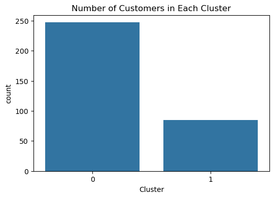
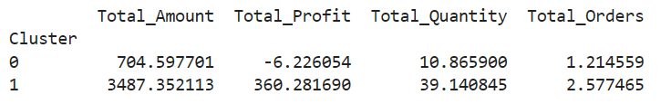

This project explores how customers can be segmented into meaningful groups using K-Means Clustering. I started this project out of curiosity about how businesses understand their customers to improve marketing strategies.
The goal was to identify customer segments based on behavior. Such segmentation helps businesses target the right audience, offer personalized experiences, and improve customer retention.
After scaling and preprocessing the data, I applied the Elbow Method to determine the optimal number of clusters. KMeans was then used to divide the customers into segments.


Each cluster represented different customer types. For instance, one group showed high spending — ideal for premium marketing. Another segment had low spending — suitable for budget offerings.
Based on this, targeted marketing efforts weighted toward the higher-spending segment would likely be more profitable than treating all customers uniformly.
Initially, understanding the correct number of clusters and interpreting them was challenging. Visualizing the clusters helped a lot. I learned how to better preprocess and scale data to get meaningful results.